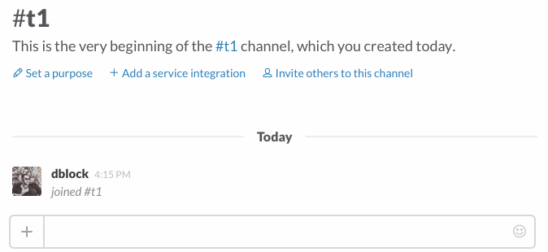

Combining RealTime and Web Clients
Since the Web client is used to obtain the RealTime client’s WebSocket URL, you can continue using the Web client in combination with the RealTime client.
client = Slack::RealTime::Client.new
client.on :message do |data|
case data.text
when 'bot hi' then
client.web_client.chat_postMessage(channel: data.channel, text: "Hi <@#{data.user}>!")
when /^bot/ then
client.web_client.chat_postMessage(channel: data.channel, text: "Sorry <@#{data.user}>, what?")
end
end
client.start!
See a fully working example in examples/hi_real_time_and_web.

Concurrency
Slack::RealTime::Client needs help from a concurrency library and supports Async.
Slack::RealTime.configure do |config|
config.concurrency = Slack::RealTime::Concurrency::Async
end
Use client.start_async instead of client.start!. A good example of such application is slack-ruby-bot-server.
client = Slack::RealTime::Client.new
client.start_async
Async
Add async-websocket to your Gemfile.
gem 'async-websocket'
See a fully working example in examples/hi_real_time_async_async.